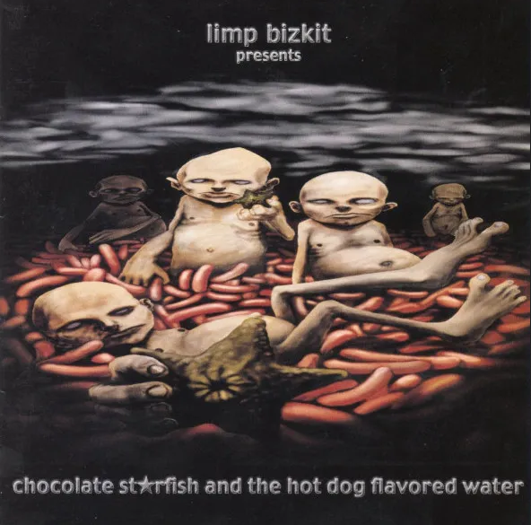
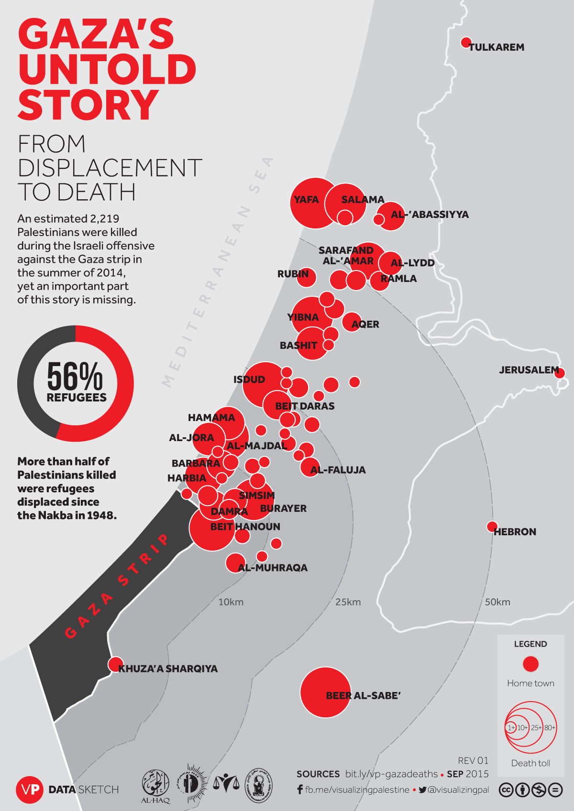

Review of Chocolate Starfish and the Hotdog Flavored Water by Limp Bizkit
Adi Kumar

Chocolate Starfish and the Hotdog Flavored Water is an album by the nu-metal band Limp Bizkit, released in 2000. The album consists of 15 songs and is 1hr and 14 mins long. But those 74 minutes went by in a flash while I was listening to it, I had never really listened to any nu-metal before yesterday, but HOLY SHIT does it get you hyped! The drums and dissonant guitar riffs drums mixed with the aggressive/angsty vocals of Fred Durst make you never want to stop headbanging to the beat. My favorite song has to be My Way, mainly for the chorus,"My way or the highway", it's a feeling that we've all wanted to tell someone at some point in our lives. The album definitely is of its time, exemplified by the production of the songs that incorporate vinyl scratching and distortion of vocals, not to mention the countless references to pop culture that most younger people including myself won't get. Simply put, this album goes hard, what more is there to say?
On Palestine
Adi Kumar

This is admittedly quite a change in tone from my previous blog post, but I think that it's a good way for me to vent my anger on the events in Palestine that have been occuring for the past month. Of course, the occupation of Palestine has been ongoing for the past 75 years now, and there has been a blockade on Gaza since 2007. The only power plant that existed in Gaza was destroyed in the 2006 war, and the Palestinians have not been allowed to turn it back on since. 90-95% of the water in Gaza is contaminated, and Israel forbids the transfer of water from the West Bank into Gaza according to Amnesty International. Additionally, in the West Bank, there is ongoing forced ethnic cleansing and removals of Palestinians from their homes, and new settlements get built on top of these communities. The UN has declared these settlements illegal, but of course when you recieve billions from the U.S. every year none of that matters. And Israel uses this money and weapons from America to kill thousands of Palestinians. Just in the past month alone 9,000 civilians have been murdered, almost 4,000 of which are children. In what world is this not genocide?
Palestinian fatalities by year since 2008
Sources: UN Office for the Coordination of Humanitarian Affairs, AP News